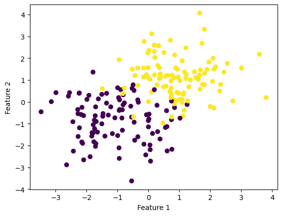
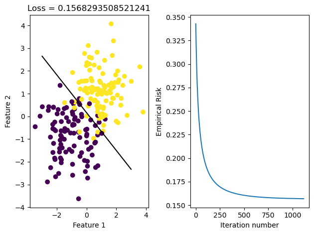
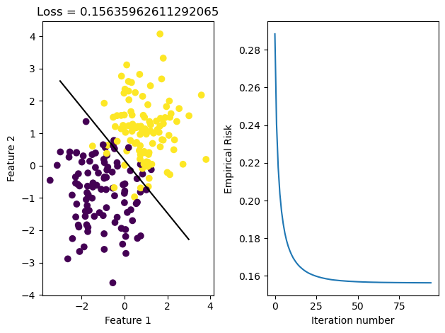
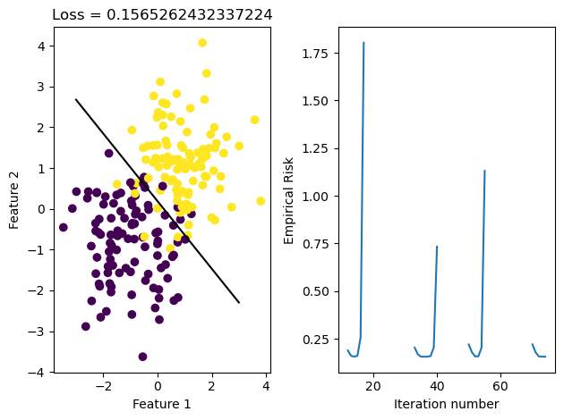
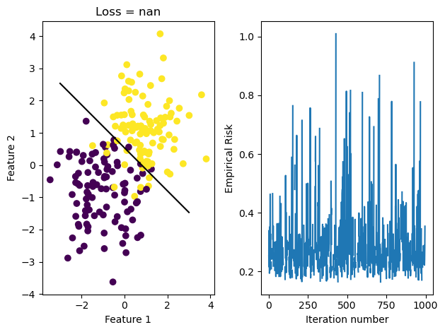
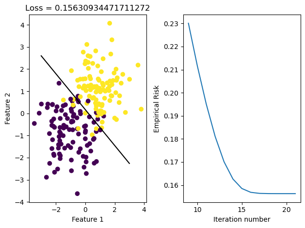
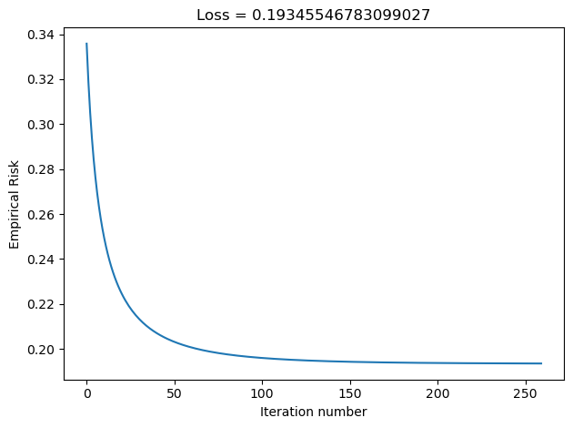
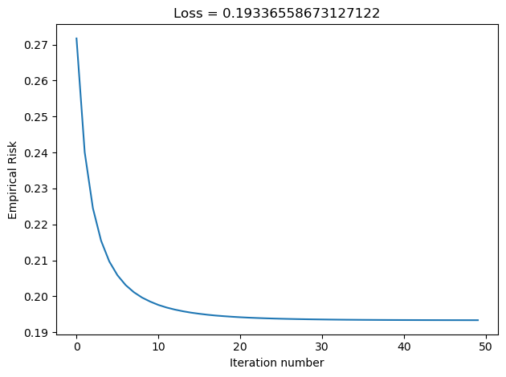
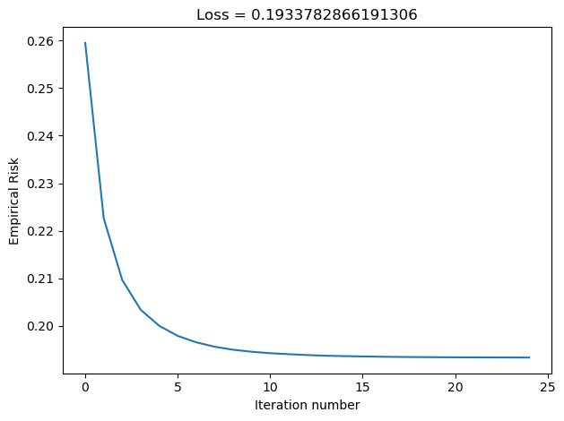
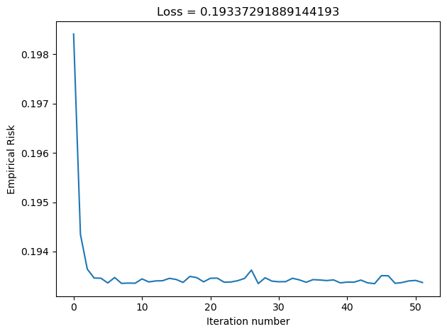

from logistic_regression import LogisticRegression # source code
from sklearn.datasets import make_blobs
from matplotlib import pyplot as plt
import numpy as np
np.seterr(all='ignore')
def graph_fit_and_loss(X, y, LR):
fig, axarr = plt.subplots(1, 2)
axarr[0].scatter(X[:,0], X[:,1], c = y)
axarr[0].set(xlabel = "Feature 1", ylabel = "Feature 2", title = f"Loss = {LR.loss_history[-1]}")
f1 = np.linspace(-3, 3, 101)
p = axarr[0].plot(f1, (- LR.w[2] - f1*LR.w[0])/LR.w[1], color = "black")
axarr[1].plot(LR.loss_history)
axarr[1].set(xlabel = "Iteration number", ylabel = "Empirical Risk")
plt.tight_layout()Optimization for Logistic Regression
Source Code: logistic-regression.py
In this blog post, we use logistic regression and gradient descent to efficiently find a hyperplane that can separate a binary classified data set with minimal loss, in other words minimize the empircal risk.
Implementation
In our LogisticRegression class, we implemented a fit and fit_stochastic function that both take the data set X and their expected labels y.
In the fit function, we are looking for the weights w (which includes the bias term) such that it mimimizes our loss. In order to find this w, we use the gradient descent framework, which searches for this local minima. In this framework, we compute the gradient of our loss function: \[\ell(\hat{y}, y)=-y\log\sigma(\hat{y})-(1-y)\log(1-\sigma(\hat{y})),\] where \(\sigma\) is the logistic sigmoid function and \(\hat{y}\) is our prediction \(\langle w,x_i \rangle\). This loss function, known as the logistic loss function, is convient for us because it is strictly convex in it’s first argument meaning that our loss can have at most one minimum. The gradient of this loss function turns out to be: \[\nabla L(w)=(1/n)\sum_{i=1}^n (\sigma(\hat{y_i})-y_i)x_i.\] This gradient equation is implemented in the gradient function of the code like
np.mean(((self.sigmoid(y_) - y)[:,np.newaxis]) * X, axis = 0).
Then, as stated in Theorem 2 of Optimization with Gradient Descent notes, because our gradent is a descent direction, we adjust our w by stepping in the direction of descent since we are looking for a w such that our loss is at the lowest it can be. We do this until we either reach the specified max_epochs or convergence. In this case, convergence is until the improvement in the our loss function is small enough in magnitiude.
The fit_stochastic function is very similar to the fit function, expect this time we don’t compute the complete gradient, we instead compute the gradient on a batch size.
Experiments and Findings
Before we conduct any experiments, we need to import and define relevant extensions, classes, and functions.
Gradient Descent and Stochastic Gradient Descent
We first created a set of data with 2 features and see that their labels slightly overlaps with each other.
# Make the data
p_features = 3
X, y = make_blobs(n_samples = 200, n_features = p_features - 1, centers = [(-1, -1), (1, 1)])
fig = plt.scatter(X[:,0], X[:,1], c = y)
xlab = plt.xlabel("Feature 1")
ylab = plt.ylabel("Feature 2")
We can then fit this data using our fit method, which uses gradient descent, and fit_stochastic, which used batch gradient descent. When we give these fit methods a reasonable learning rate \(\alpha\), then we would expect them to converge.
# Fit the model
LR = LogisticRegression()
LR.fit(X, y, alpha = 0.1, max_epochs = 10000)
graph_fit_and_loss(X, y, LR)
# Fit the model
LR = LogisticRegression()
LR.fit_stochastic(X, y, alpha = 0.1, max_epochs = 10000, batch_size = 10)
graph_fit_and_loss(X, y, LR)
After running these methods, we see that the data was able to converge in both cases. We see that they both reach the same loss, but the stochastic gradient descent reaches it in fewer iterations, meaning it iterated over all data points less times. This may be because it makes updates to w more frequently than regular gradient descent does, since it samples its w on smaller portions of data set X and updates as it goes.
Learning Rate \(\alpha\)
It’s important that the learning rate \(\alpha\) is relatively small. Before we set our alpha to 0.1, but if we use the same data and set it to a too high number we will see that we never converge in both regular gradient descent and stochastic gradient descent. If it’s too large, we might be updating w by too much such that it eventually skips over the minimum.
# Fit the model
LR = LogisticRegression()
LR.fit(X, y, alpha = 125, max_epochs = 1000)
graph_fit_and_loss(X, y, LR)
LR.fit_stochastic(X, y, alpha = 50, max_epochs = 1000, batch_size = 50)
graph_fit_and_loss(X, y, LR)
LR.fit(X, y, alpha = 50, max_epochs = 1000)
graph_fit_and_loss(X, y, LR)
We see, however, that because stochastic gradient descent updates w more often depending on our batch_size, our fit_stochastic doesn’t converge with a high learning rate that our regular gradient descent method can converge with.
Stochastic Gradient Descent: Batch Size
Now, we will run some experiments on how the batch size influences convergence. We will do this with a larger data set that has 10 features.
# Make the data
p_features = 11
X, y = make_blobs(n_samples = 1000, n_features = p_features - 1, centers = [(-1, -1), (1, 1)])
def graph_loss(LR):
fig, axarr = plt.subplots(1, 1)
axarr.plot(LR.loss_history)
axarr.set(xlabel = "Iteration number", ylabel = "Empirical Risk", title = f"Loss = {LR.loss_history[-1]}")
plt.tight_layout()In the Disenroth, Faisal, and Soon reading, they observe that “Large mini-batch sizes will provide accurate estimates of the gradient, reducing the variance in the parameter update. … The reduction in variance leads to more stable convergence, but each graident calculation will be more expensive” (232) On the other hand, they observe that “small mini-batches are quick to estimate. If we keep the mini-batch size small, the noise in our graident estimate will allow us to get out of some bad local optima” (232). We’ll conduct experiments such that our batch_size decreases in size, and we’ll inspect their loss to see how Disenroth, Faisal, and Soon’s observations hold.
LR.fit_stochastic(X, y, alpha = 0.1, max_epochs = 10000, batch_size = 500)
graph_loss(LR)
LR.fit_stochastic(X, y, alpha = 0.1, max_epochs = 10000, batch_size = 50)
graph_loss(LR)
LR.fit_stochastic(X, y, alpha = 0.1, max_epochs = 10000, batch_size = 25)
graph_loss(LR)
LR.fit_stochastic(X, y, alpha = 0.1, max_epochs = 10000, batch_size = 5)
graph_loss(LR)
We see that as our batch size gets smaller, our number of iterations over the all data points in X also gets smaller. This relates to why stochastic gradient descent uses fewer iterations as gradient descent. As our batch size gets larger, we do not updates w as frequently as we would have if it were smaller. However, stochastic gradient descent with large batch sizes